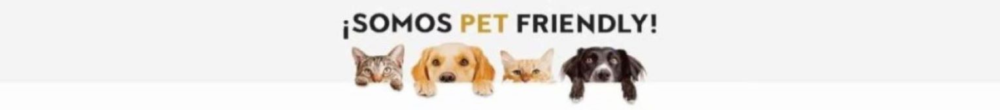

¿QUIENES SOMOS?
K.NINOS es una peluquería canina abocada al bien estar y limpieza de nuestros compañeros de familia peludos, ubicado en el centro de Mar del Plata, Buenos Aires.

¡Mucho más que cortar el pelo!
En K.NINOS encontraras profesionales especializados en higiene y estética que tienen como objetivo preservar la salud y belleza de tu mascota.
¿Por qué traer tu mascota?
- Evitar golpes de calor.
- Detectar alergias o intolerancias.
- Baños terapéuticos especiales para tu mascota.
- Lo más importante, ¡elimina el estrés!.